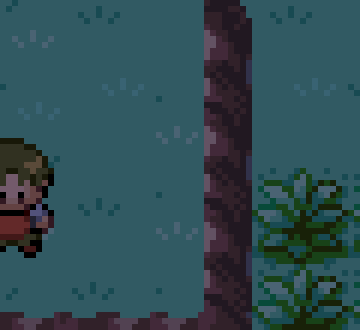
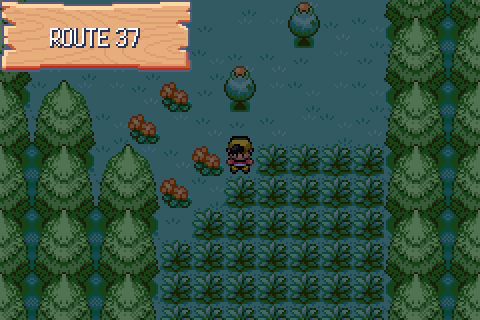
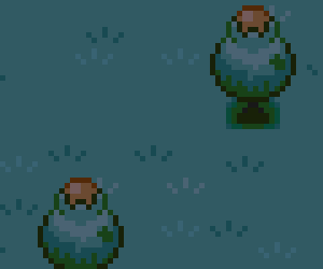
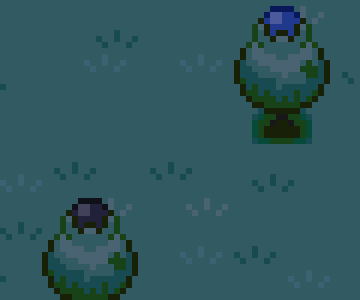
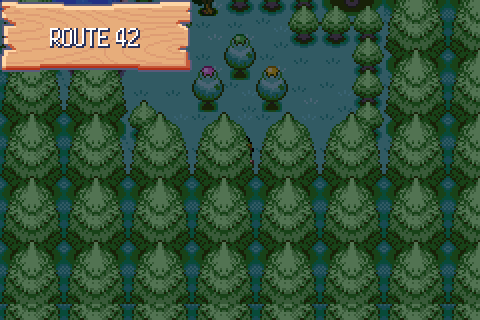
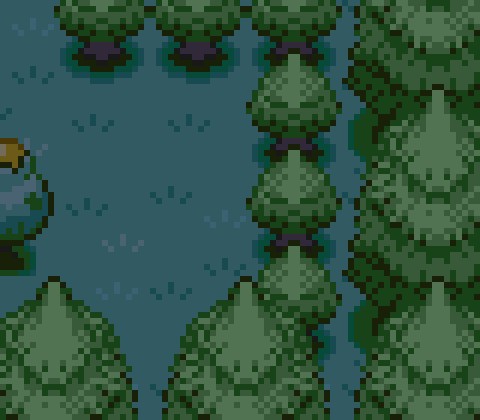
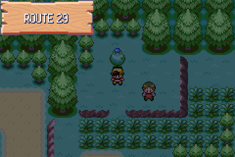
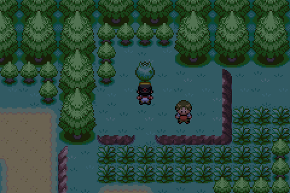

Follow-up to D110 item 3. The tester asked for the fruit hanging in the tree to
match the apricorn the tree gives, which the shared fruit metatile cannot do.
The fruit is now a 16×16 object event with one OBJ palette per apricorn
colour, drawn on top of the (amber) metatile. Captures are raw mGBA frames from
tools/playtest/playtest.py against the rebuilt ROM; close-ups are
nearest-neighbour upscales of the same frames. All shots are night-time, so the
palettes are darkened by UpdateTimeOfDayPaletteFade. Full reasoning
in docs/port/decisions.md, section D111.
The object events spawned and their palettes loaded from the
first build, but nothing appeared: an object event on ground elevation gets
oam.priority = 2, and the fruit tiles of
METATILE_General_FruitTreeTop live on the map's top layer, BG1, at
priority 1. The sprite was behind the tree. TrySetupObjectEventSprite
now pins the apricorn graphics ids to priority 1 with
fixedPriority.



The case D110 said a single shared tileset ramp could never
serve. FRUIT_TREE_ROUTE_42_1/2/3 give pink, green and yellow
apricorns.


The object event's template flag is the same
FLAG_FRUIT_TREES_START + treeId - 1 the pick script sets, so the
fruit stays away on every later load. Nothing re-reads template flags mid-map,
though, so SetFruitTreeMetatileTakenFromId also removes the live
object event.

ITEM_BLU_APRICORN

FLAG_FRUIT_TREES_START was
CRYSTAL_FLAGS_START + 849, and the block only had room for one flag
before the next named flag began. Trees 2–30 were aliasing 29 live flags
starting at FLAG_BUENAS_PASSWORD_SET — picking the second
Route 30 apricorn set Buena's password. Moved to
CRYSTAL_FLAGS_START + 880 with NUM_CRYSTAL_FLAGS grown
880 → 912.